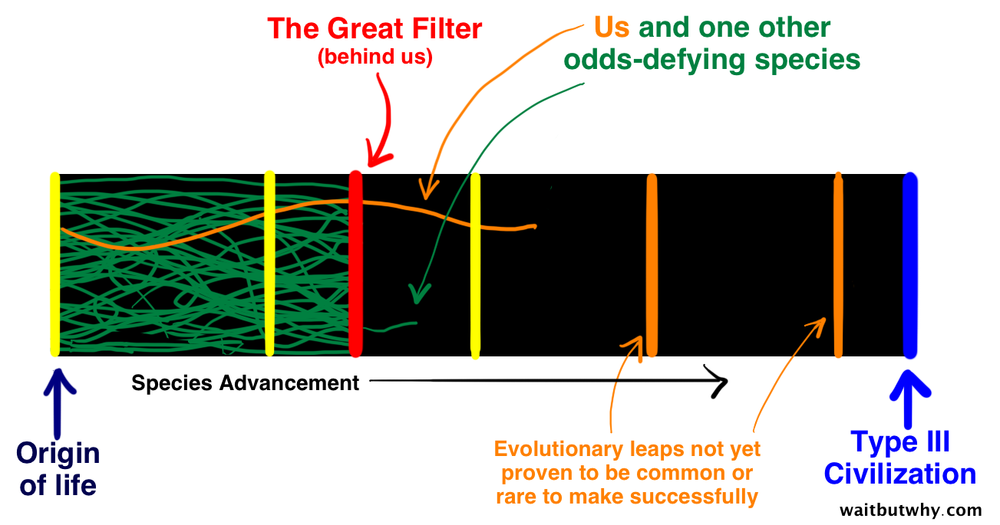
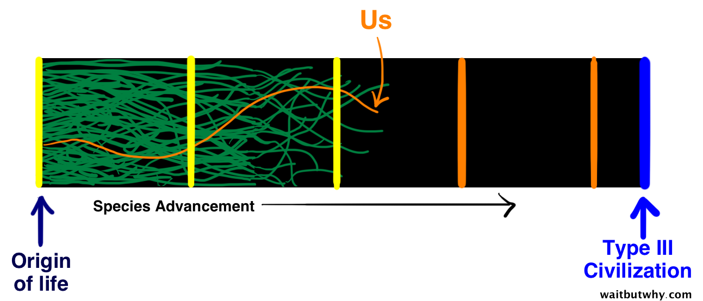
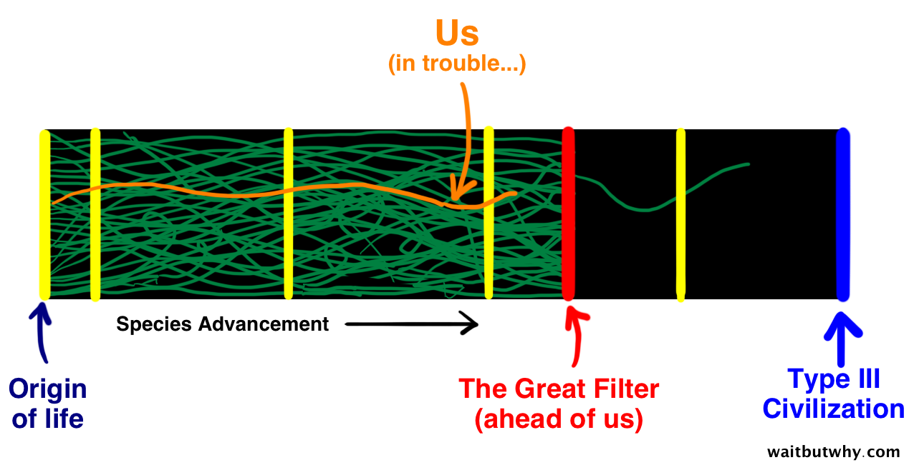

# Where is everybody? by <a href="http://twitter.com/TomiTurtiainen">@TomiTurtiainen</a>
# Disclaimer This presentation is entirely based on Wait But Why article The Fermi Paradox
# Warning This presentation may cause existential crisis
# On a starry night You can see up to about 2500 stars <!-- .element: class="fragment" --> Which is roughly 0.0000001 % of stars in our galaxy <!-- .element: class="fragment" -->
# Math time
100 – 400 billion stars in our galaxy <!-- .element: class="fragment" --> Equal number of galaxies in observable universe <!-- .element: class="fragment" --> <p class="fragment"> <svg xmlns="http://www.w3.org/2000/svg" xmlns:xlink="http://www.w3.org/1999/xlink" xmlns:a="http://ns.adobe.com/AdobeSVGViewerExtensions/3.0/" version="1.1" width="60" height="25" viewBox="-0.709 -0.235 213 71" enable-background="new -0.709 -0.235 213 71" xml:space="preserve"> <defs> </defs> <polygon style="fill:#fff;" points="0,26.488 0,44.144 167.747,44.144 167.747,70.631 211.89,35.316 167.747,0 167.747,26.488 "/> </svg> 10<sup>22</sup> — 10<sup>24</sup> stars in the universe </p> <p class="fragment"> <svg xmlns="http://www.w3.org/2000/svg" xmlns:xlink="http://www.w3.org/1999/xlink" xmlns:a="http://ns.adobe.com/AdobeSVGViewerExtensions/3.0/" version="1.1" width="60" height="25" viewBox="-0.709 -0.235 213 71" enable-background="new -0.709 -0.235 213 71" xml:space="preserve"> <defs> </defs> <polygon style="fill:#fff;" points="0,26.488 0,44.144 167.747,44.144 167.747,70.631 211.89,35.316 167.747,0 167.747,26.488 "/> </svg> 10,000 stars for **every** grain of sand on earth </p>
~5 % — 20 % "sun-like" (similar in size, temperature, and luminosity) <!-- .element: class="fragment" --> Using the lower estimates <!-- .element: class="fragment" --> <p class="fragment"> <svg xmlns="http://www.w3.org/2000/svg" xmlns:xlink="http://www.w3.org/1999/xlink" xmlns:a="http://ns.adobe.com/AdobeSVGViewerExtensions/3.0/" version="1.1" width="60" height="25" viewBox="-0.709 -0.235 213 71" enable-background="new -0.709 -0.235 213 71" xml:space="preserve"> <defs> </defs> <polygon style="fill:#fff;" points="0,26.488 0,44.144 167.747,44.144 167.747,70.631 211.89,35.316 167.747,0 167.747,26.488 "/> </svg> **500 billion billion sun-like stars** </p> <p class="fragment"> <svg xmlns="http://www.w3.org/2000/svg" xmlns:xlink="http://www.w3.org/1999/xlink" xmlns:a="http://ns.adobe.com/AdobeSVGViewerExtensions/3.0/" version="1.1" width="60" height="25" viewBox="-0.709 -0.235 213 71" enable-background="new -0.709 -0.235 213 71" xml:space="preserve"> <defs> </defs> <polygon style="fill:#fff;" points="0,26.488 0,44.144 167.747,44.144 167.747,70.631 211.89,35.316 167.747,0 167.747,26.488 "/> </svg> 500,000,000,000,000,000,000 sun-like stars </p>
Conservative estimate 22 % orbited by Earth-like planet<small><sup style="font-size: -2px">[<a href="http://www.pnas.org/content/early/2013/10/31/1319909110.abstract">1</a>]</sup></small> <p class="fragment"> <svg xmlns="http://www.w3.org/2000/svg" xmlns:xlink="http://www.w3.org/1999/xlink" xmlns:a="http://ns.adobe.com/AdobeSVGViewerExtensions/3.0/" version="1.1" width="60" height="25" viewBox="-0.709 -0.235 213 71" enable-background="new -0.709 -0.235 213 71" xml:space="preserve"> <defs> </defs> <polygon style="fill:#fff;" points="0,26.488 0,44.144 167.747,44.144 167.747,70.631 211.89,35.316 167.747,0 167.747,26.488 "/> </svg> **100 billion billion Earth-like planets** </p> <p class="fragment"> <svg xmlns="http://www.w3.org/2000/svg" xmlns:xlink="http://www.w3.org/1999/xlink" xmlns:a="http://ns.adobe.com/AdobeSVGViewerExtensions/3.0/" version="1.1" width="60" height="25" viewBox="-0.709 -0.235 213 71" enable-background="new -0.709 -0.235 213 71" xml:space="preserve"> <defs> </defs> <polygon style="fill:#fff;" points="0,26.488 0,44.144 167.747,44.144 167.747,70.631 211.89,35.316 167.747,0 167.747,26.488 "/> </svg> 100,000,000,000,000,000,000 Earth-like planets </p>
<p class="fragment">Moving back to our galaxy</p> <p class="fragment">**1 billion Earth-like planets**</p> <p class="fragment">And using the Drake equation<small><sup style="font-size: -2px">[<a href="http://www.seti.org/drakeequation">2</a>]</sup></small></p> <p class="fragment">**100,000 intelligent civilizations in our galaxy**</p>
Compared to the universe, our Earth is quite young (13.7 vs. 4.54 billion years) <!-- .element: class="fragment" --> Imagine a hypothetical, 8 billion years old planet <!-- .element: class="fragment" -->
<p>The Kardashev scale<small><sup style="font-size: -2px">[<a href="http://www.princeton.edu/~achaney/tmve/wiki100k/docs/Kardashev_scale.html">3</a>]</sup></small> groups intelligent civilizations into three categories</p> 1. **Type I Civilization** - able to use all energy on their **planet** 2. **Type II Civilization** - able to use all energy of their **host star** 3. **Type III Civilization** - able to use all energy of **the entire Milky Way galaxy**
<p class="fragment">If 1 % of the planets survived to become Type III,</p> <p class="fragment">there would be **1,000** Type III civilizations in our galaxy</p>
<p class="fragment">If the 3.4 billion years older Planet X survived to reach Type III level,</p> <p class="fragment">you'd imagine they'd probably mastered inter-stellar travel...</p>
# Yet we haven't found anybody...
# Fermi Paradox
# Multiple theories, can be split into two groups
# Explanation Group 1 There are no signs of higher (Type II and III) civilizations because there are no higher civilizations in existence. <!-- .element: class="fragment" -->
There should be many higher civilizations, so we should have made contact, but we haven't <p class="fragment"> <svg xmlns="http://www.w3.org/2000/svg" xmlns:xlink="http://www.w3.org/1999/xlink" xmlns:a="http://ns.adobe.com/AdobeSVGViewerExtensions/3.0/" version="1.1" width="60" height="25" viewBox="-0.709 -0.235 213 71" enable-background="new -0.709 -0.235 213 71" xml:space="preserve"> <defs> </defs> <polygon style="fill:#fff;" points="0,26.488 0,44.144 167.747,44.144 167.747,70.631 211.89,35.316 167.747,0 167.747,26.488 "/> </svg> Something else must be going on </p>
## The Great Filter "At some point from pre-life to Type III intelligence, there’s a wall that all or nearly all attempts at life hit" <!-- .element: class="fragment" -->
### IF that theory holds, on which side are we?
## 1. We're Rare (The Great Filter is Behind Us) 
## So which step did we surpass that others got stuck on?
### Option The Great Filter could be at the very beginning — it might be incredibly unusual for life to begin at all. It's not there isn't any other intelligent life out there, there may be *no other life at all*
### Option The Great Filter could be the jump from the simple prokaryote cell to the complex eukaryote cell It took almost *2 billion years* for prokaryote cells to evolve to eukaryote cells
## 2. We're the First 
Maybe conditions in universe have just become favorable for life <p class="fragment"> <svg xmlns="http://www.w3.org/2000/svg" xmlns:xlink="http://www.w3.org/1999/xlink" xmlns:a="http://ns.adobe.com/AdobeSVGViewerExtensions/3.0/" version="1.1" width="60" height="25" viewBox="-0.709 -0.235 213 71" enable-background="new -0.709 -0.235 213 71" xml:space="preserve"> <defs> </defs> <polygon style="fill:#fff;" points="0,26.488 0,44.144 167.747,44.144 167.747,70.631 211.89,35.316 167.747,0 167.747,26.488 "/> </svg> We and other species may be on our way to super-intelligence </p>
## 3. We're fucked (The Great Filter is Ahead of Us) 
Maybe the Great Filter is a regularly-occurring cataclysmic natural event, like gamma-ray bursts Maybe nearly all intelligent civilizations end up destroying themselves once a certain level of technology is reached. <p class="fragment"> <svg xmlns="http://www.w3.org/2000/svg" xmlns:xlink="http://www.w3.org/1999/xlink" xmlns:a="http://ns.adobe.com/AdobeSVGViewerExtensions/3.0/" version="1.1" width="60" height="25" viewBox="-0.709 -0.235 213 71" enable-background="new -0.709 -0.235 213 71" xml:space="preserve"> <defs> </defs> <polygon style="fill:#fff;" points="0,26.488 0,44.144 167.747,44.144 167.747,70.631 211.89,35.316 167.747,0 167.747,26.488 "/> </svg> “no news is good news” </p>
# Explanation Group 2 Type II and III intelligent civilizations are out there — and there are logical reasons why we might not have heard from them. <!-- .element: class="fragment" -->
There's nothing unusual or rare about our galaxy, solar system or planet, until proven otherwise. <!-- .element: class="fragment" --> Our search for signals stretches only about 100 light years away from us (0.1% across the galaxy) <!-- .element: class="fragment" --> <p class="fragment"> <svg xmlns="http://www.w3.org/2000/svg" xmlns:xlink="http://www.w3.org/1999/xlink" xmlns:a="http://ns.adobe.com/AdobeSVGViewerExtensions/3.0/" version="1.1" width="60" height="25" viewBox="-0.709 -0.235 213 71" enable-background="new -0.709 -0.235 213 71" xml:space="preserve"> <defs> </defs> <polygon style="fill:#fff;" points="0,26.488 0,44.144 167.747,44.144 167.747,70.631 211.89,35.316 167.747,0 167.747,26.488 "/> </svg> There are number of possible explanations </p>
## 1. Super-intelligent life visited Earth before we were here Sentient humans have only been around for about 50,000 years <!-- .element: class="fragment" --> Recorded history only goes back 5,500 years <!-- .element: class="fragment" -->
## 2. Galaxy has been colonized, but we live in desolate area of the galaxy Compare what a small Inuit tribe in northern Canada knew when Americas were being colonized <!-- .element: class="fragment" -->
## 3. The entire concept of colonization is a backward concept to a more advanced species <p class="fragment">With all that available energy, they might have created a perfect environment for themselves</p> <p class="fragment">They might view the *entire physical world* as a horribly primitive place</p>
## 4. There are scary predator civilizations out there, it's better not to broadcast Would explain why SETI hasn't picked up anything <!-- .element: class="fragment" --> Stephen Hawking and Carl Sagan advised against it <!-- .element: class="fragment" -->
## 5. There’s only one higher-intelligent life — a “superpredator” civilization Far more advanced than everyone else and keeps it that way by exterminating any intelligent civilization once they get past a certain level. <!-- .element: class="fragment" --> Whoever was the first in the galaxy to reach intelligence won, and now no one else has a chance <!-- .element: class="fragment" -->
## 6. Plenty of activity out there, we're just too primitive and listening the wrong things Like you wouldn't hear anything if you used a walkie-talkie <!-- .element: class="fragment" --> It might take them 12 years to say "Hello" <!-- .element: class="fragment" -->
## 7. We *are* receiving contact from other intelligent life, but the government is hiding it Most likely an idiotic theory <!-- .element: class="fragment" -->
## 8. Higher civilizations are aware of us and observing us (AKA the “Zoo Hypothesis”) Like a protected national park "Look but don't touch" <!-- .element: class="fragment" --> Or like Star Trek’s “Prime Directive” <!-- .element: class="fragment" -->
## 9. Higher civilizations are here, all around us. But we’re too primitive to perceive them Imagine a 10-lane super-highway is being constructed next to an anthill. Do the ants understand what's happening? <!-- .element: class="fragment" --> Would the constructors even pay attention to the anthill? <!-- .element: class="fragment" -->
## 10. We’re completely wrong about our reality Maybe we are an alien experiment <!-- .element: class="fragment" --> Maybe we're just in a computer simulation, and other life forms were not programmed into it <!-- .element: class="fragment" -->
# In summary No matter which of these theories is actually true, <!-- .element: class="fragment" --> learning either that we’re officially alone in the universe or that we’re officially joined by others, <!-- .element: class="fragment" --> whatever the truth actually is, it’s mindblowing <!-- .element: class="fragment" -->
## Thank you! ## Questions?